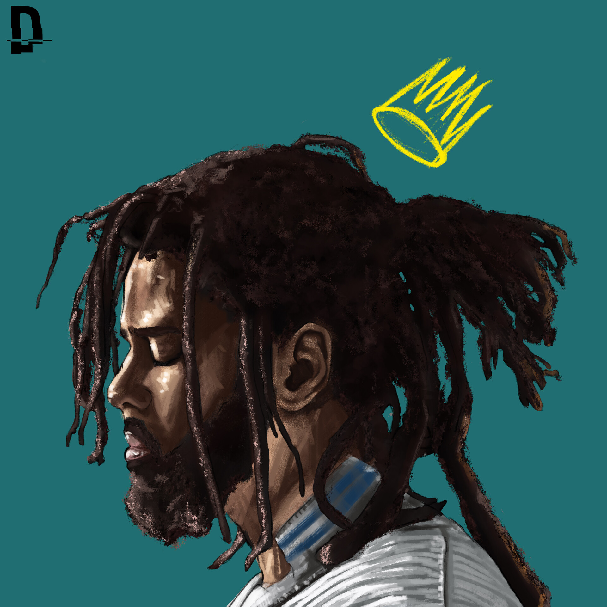

J. Cole

Jermaine cole is definitely one of the best lyricist out there today. He creates music that his fans can relate to and is a great storyteller.
Musical career
J.Cole has had a very successfull career after being spotted by Jay Z.
Contact Me